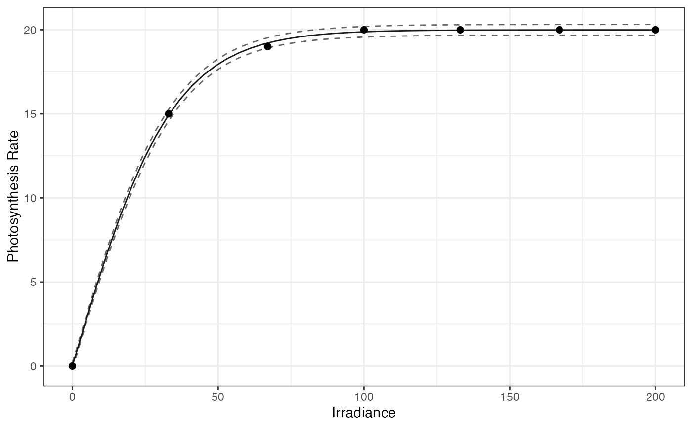

Visualizes a fitted photosynthesis–irradiance (PI) model along with optional confidence intervals on observed data points.
Plot_piCurve(
Fitted_Model,
data,
add_CI = FALSE,
n_cores = 1,
length_out = 50,
point_size = 2
)A model object returned by Fit_piModel containing parameter estimates and model type.
A data frame containing observed data with columns I (irradiance) and P (photosynthesis).
Logical. Whether to add confidence intervals around the fitted curve (default: FALSE, see details).
Integer. Number of CPU cores to use if computing confidence intervals (default: 1).
Integer. Number of points to use when generating the high-resolution fitted curve (default: 50).
Numeric. Size of observed data points in the plot (default: 2).
A ggplot object showing the observed data points, fitted PI curve, and optionally the confidence interval bounds.
If add_CI = TRUE, the function internally calls addCI_to_piPred to compute confidence intervals at each irradiance level used for prediction.
If the input data is not properly formatted (missing columns "P" or "I"), the function attempts to fix it using FormatCheck_piCurve.
df <- tibble::tibble(
I = c(0, 33, 67, 100, 133, 167, 200),
P = c(0, 15, 19, 20, 20, 20, 20)
)
fit <- Fit_piModel(
parameters = c(Pmax = 19, alpha = 0.5, R = 0, StDev = 0.1),
data = df, STATapp = "MLE", Hessian = TRUE
)
Plot_piCurve(fit, data = df, add_CI = TRUE, n_cores = 2)
